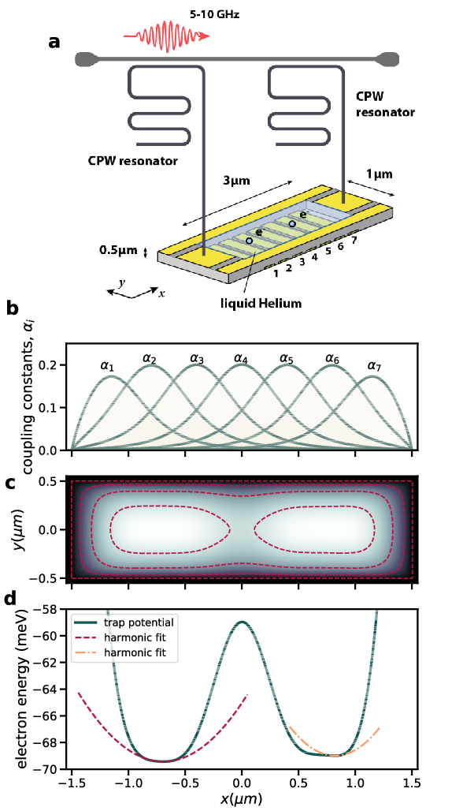

Here we describe a method for generating motional entanglement between two electrons trapped above the surface of superfluid helium. In this proposed scheme these electronic charge qubits are laterally confined via electrostatic gates to create an anharmonic trapping potential. When the system is cooled to sufficiently low temperature these in-plane charge qubit states are quantized and circuit quantum electrodynamic methods can be used to control and readout single qubit operations. Perspectives for quantum simulations with quantum dots systems will be discussed as well as how to set up explicit circuits for simulating nuclear physics Hamiltonians, theoretically and experimentally.
Niyaz Beysengulov and Johannes Pollanen (experiment, Physics); Zachary Stewart, Jared Weidman, and Angela Wilson (quantum chemistry)
Øyvind Sigmundson Schøyen, Stian Dysthe Bilek, Jonas Boym Flaten, and Oskar Leinonen and Håkon Emil Kristiansen (Physics and quantum chemistry). In addition collaboration on point defects with Marianne Bathen and Lasse Vines.
How can we avoid the dimensionality curse? Many possibilities
Electrons on superfluid helium represent a promising platform for investigating strongly-coupled qubits.
Therefore a systematic investigation of the controlled generation of entanglement between two trapped electrons under the influence of coherent microwave driving pulses, taking into account the effects of the Coulomb interaction between electrons, is of significant importance for quantum information processing using trapped electrons.
Entanglement is the fundamental characteristic that distinguishes quantum systems composed of two or more coupled objects from their classical counterparts. The study of entanglement in precisely engineered quantum systems with countably many degrees of freedom is at the forefront of modern physics and is a key resource in quantum information science (QIS). This is particularly true in the development of two-qubit logic for quantum computation.
The generation of two-qubit entanglement has been demonstrated in a wide variety of physical systems used in present-day quantum computing, including superconducting circuits, trapped ions, semiconductor quantum dots, color-center defects in diamond, and neutral atoms in optical lattices, just to name a few.
Generating an entanglement between two quantum systems rely on exploiting interactions in a controllable way. The details in the interaction Hamiltonian between two systems defines the protocol schemes for two-qubit logic.
In superconducting circuits the interaction between qubits may arise from direct capacitive coupling between circuit elements or by indirect coupling of two qubits to a common resonator (virtually populating resonator mode) which results in a non-local Hamiltonian in the form of exchange interaction. This allow to implement various schemes for entanglement, such as controlled-phase gate, resonator-induced phase gate, cross-resonance gates etc.
Entanglement gates in trapped ions are produced by means of the Coulomb interaction, where shared motional modes of two or more ions, entangled to their internal states, used for transferring excitations between ion qubits. This has been experimentally demonstrated.
In photonic quantum computing schemes two-qubit entangling operations are realized by nonlinear interactions between two photons scattering from quantum dots, plasmonic nanowires, diamond vacancy centers and others embedded into waveguides. Two-qubit gates in semiconductor quantum dots are based on spin-spin exchange interactions or generated by coupling to a superconducting resonator via artificial spin-orbit interaction.
In order to study entanglement and why it is so important for quantum computing, we need to introduce some basic measures and useful quantities. For these endeavors, we will use our two-qubit system from the second lecture in order to introduce, through examples, density matrices and entropy. These two quantities, together with technicalities like the Schmidt decomposition define important quantities in analyzing quantum computing examples.
We will study two simple Hamiltonian systems, one which we can use for a single qubit systems and one which has as basis functions a two-qubit system. These two simple Hamiltonians exhibit also something which is called level crossing, a feature which we will use in later studies of entanglement.
We study first a simple two-level system. Thereafter we extend our model to a four-level system which can be interpreted as composed of two separate (not necesseraly identical) subsystems.
We let our hamiltonian depend linearly on a strength parameter \( z \)
$$ H=H_0+\lambda H_\mathrm{I}, $$with \( \lambda \in [0,1] \), where the limits \( \lambda=0 \) and \( \lambda=1 \) represent the non-interacting (or unperturbed) and fully interacting system, respectively. The model is an eigenvalue problem with only two available states, which we label \( \vert 0\rangle \) and \( \vert 1\rangle \), respectively. Below we will let state \( \vert 0 \rangle \) represent the lowest state (often referred to as model-space state) with its pertinent eigenvalue and eigenvector whereas state \( \vert 1\rangle \) represents the eigenvalue of the excluded space. The non-interacting solutions to our problem are
$$ \begin{equation} H_0\vert 0 \rangle =\epsilon_0\vert 0 \rangle, \label{_auto1} \end{equation} $$and
$$ \begin{equation} H_0\vert 1\rangle =\epsilon_1\vert 1\rangle, \label{_auto2} \end{equation} $$with \( \epsilon_0 < \epsilon_1 \). We label the off-diagonal matrix elements \( X \), while \( X_0=\langle 0 \vert H_I\vert 0 \rangle \) and \( X_1=\langle 1 \vert H_1\vert 1 \rangle \). The exact eigenvalue problem
$$ \label{eq:twolevelH} \begin{equation} \left(\begin{array}{cc}\epsilon_0+\lambda X_0 &\lambda X \\ \lambda X &\epsilon_1+\lambda X_1 \end{array}\right) \end{equation} $$yields
$$ \begin{eqnarray} \label{eq:exact} E(\lambda)=&\frac{1}{2}\left\{\epsilon_0 +\epsilon_1 +\lambda X_0 +\lambda X_1 \pm \left( \epsilon_1 -\epsilon_0 +\lambda X_1-\lambda X_0\right) \right. \\ \nonumber & \left. \times\sqrt{1+\frac{4\lambda^2X^2}{\left( \epsilon_1 -\epsilon_0 +\lambda X_1-\lambda X_0\right)^2}} \right\}. \end{eqnarray} $$In the results below we set the parameters \( \epsilon_0=0 \), \( \epsilon_1=4 \), \( X_0=-X_1=3 \) and \( X=0.2 \). This eigenvalue problem can easily be rewritten in terms of the standard Pauli matrices. The non-interacting solutions represent our computational basis. Pertinent to our choice of parameters, is that at \( \lambda\geq 2/3 \), the lowest eigenstate is dominated by \( \vert 1\rangle \) while the upper is \( \vert 0 \rangle \). At \( \lambda=1 \) the \( \vert 0 \rangle \) mixing of the lowest eigenvalue is \( 1\% \) while for \( \lambda\leq 2/3 \) we have a \( \vert 0 \rangle \) component of more than \( 90\% \). The character of the eigenvectors has therefore been interchanged when passing \( z=2/3 \). The value of the parameter \( X \) represents the strength of the coupling between the model space and the excluded space. The following code computes and plots the eigenvalues.
%matplotlib inline
from matplotlib import pyplot as plt
import numpy as np
dim = 2
#Setting up a tridiagonal matrix and finding eigenvectors and eigenvalues
Hamiltonian = np.zeros((dim,dim))
#number of lambda values
n = 100
lmbd = np.linspace(0.,1.0,n)
e0 = 0.0
e1 = 4.0
X = 0.20
Xp = 3.0
Eigenvalue = np.zeros((dim,n))
for i in range(n):
Hamiltonian[0,0] = lmbd[i]*Xp+e0
Hamiltonian[0,1] = lmbd[i]*X
Hamiltonian[1,0] = Hamiltonian[0,1]
Hamiltonian[1,1] = e1+lmbd[i]*(-Xp)
# diagonalize and obtain eigenvalues, not necessarily sorted
EigValues, EigVectors = np.linalg.eig(Hamiltonian)
# sort eigenvectors and eigenvalues
permute = EigValues.argsort()
EigValues = EigValues[permute]
EigVectors = EigVectors[:,permute]
Eigenvalue[0,i] = EigValues[0]
Eigenvalue[1,i] = EigValues[1]
plt.plot(lmbd, Eigenvalue[0,:] ,'b-',lmbd, Eigenvalue[1,:],'g-',)
plt.xlabel('$\lambda$')
plt.ylabel('Eigenvalues')
plt.show()
This model exhibits a simple level crossing where the composition of the final interacting states change character as we gradually switch on the interaction.
The avoided crossing plays a central role in quantum simulations. It results from the coherent transfer of the population between the state \( \vert 0\rangle \) and the state \( \vert 1\rangle \). When we say coherent we mean that the quantumness and entanglement are preserved and the system follows our equation of motion (the Schroedinger equation) as expected. In real experiment it is not that simple.
In quantum technology, different quantum systems are coupled to enable various quantum state transfers and manipulations. Experimentally, avoided crossing of the energy levels, is one of the first feature to look for since it manifests the signature of preservation of quantumness and clean coupling between states in the experimental setup.
We have the spectral decomposition of a given operator \( \boldsymbol{A} \) given by
$$ \boldsymbol{A}=\sum_i\lambda_i\vert i \rangle\langle i\vert, $$with the ONB \( \vert i\rangle \) being eigenvectors of \( \boldsymbol{A} \) and \( \lambda_i \) being the eigenvalues. Similarly, a operator which is a function of \( \boldsymbol{A} \) is given by
$$ f(\boldsymbol{A})=\sum_if(\boldsymbol{A})\vert i \rangle\langle i\vert. $$The trace of a product of matrices is cyclic, that is
$$ \mathrm{tr}[\boldsymbol{ABC}])=\mathrm{tr}[\boldsymbol{BCA}])=\mathrm{tr}[\boldsymbol{CBA}]), $$and we have also
$$ \mathrm{tr}[\boldsymbol{A}\vert \psi\rangle\langle\psi\vert])=\langle\psi\vert\boldsymbol{A}\vert\psi\rangle. $$Using the spectral decomposition we defined also the density matrix as
$$ \rho = \sum_i p_i\vert i \rangle\langle i\vert, $$where the probability \( p_i \) are the eigenvalues of the density matrix/operator linked with the ONB \( \vert i \rangle \).
The trace of the density matrix \( \mathrm{tr}\rho=1 \) and is invariant under unitary transformations.
This system can be thought of as composed of two subsystems \( A \) and \( B \). Each subsystem has computational basis states
$$ \vert 0\rangle_{\mathrm{A,B}}=\begin{bmatrix} 1 & 0\end{bmatrix}^T \hspace{1cm} \vert 1\rangle_{\mathrm{A,B}}=\begin{bmatrix} 0 & 1\end{bmatrix}^T. $$The subsystems could represent single particles or composite many-particle systems of a given symmetry. This leads to the many-body computational basis states
$$ \vert 00\rangle = \vert 0\rangle_{\mathrm{A}}\otimes \vert 0\rangle_{\mathrm{B}}=\begin{bmatrix} 1 & 0 & 0 &0\end{bmatrix}^T, $$and
$$ \vert 01\rangle = \vert 0\rangle_{\mathrm{A}}\otimes \vert 1\rangle_{\mathrm{B}}=\begin{bmatrix} 0 & 1 & 0 &0\end{bmatrix}^T, $$and
$$ \vert 10\rangle = \vert 1\rangle_{\mathrm{A}}\otimes \vert 0\rangle_{\mathrm{B}}=\begin{bmatrix} 0 & 0 & 1 &0\end{bmatrix}^T, $$and finally
$$ \vert 11\rangle = \vert 1\rangle_{\mathrm{A}}\otimes \vert 1\rangle_{\mathrm{B}}=\begin{bmatrix} 0 & 0 & 0 &1\end{bmatrix}^T. $$These computational basis states define also the eigenstates of the non-interacting Hamiltonian
$$ H_0\vert 00 \rangle = \epsilon_{00}\vert 00 \rangle, $$ $$ H_0\vert 10 \rangle = \epsilon_{10}\vert 10 \rangle, $$ $$ H_0\vert 01 \rangle = \epsilon_{01}\vert 01 \rangle, $$and
$$ H_0\vert 11 \rangle = \epsilon_{11}\vert 11 \rangle. $$The interacting part of the Hamiltonian \( H_{\mathrm{I}} \) is given by the tensor product of two \( \sigma_x \) and \( \sigma_z \) matrices, respectively, that is
$$ H_{\mathrm{I}}=H_x\sigma_x\otimes\sigma_x+H_z\sigma_z\otimes\sigma_z, $$where \( H_x \) and \( H_z \) are interaction strength parameters. Our final Hamiltonian matrix is given by
$$ \boldsymbol{H}=\begin{bmatrix} \epsilon_{00}+H_z & 0 & 0 & H_x \\ 0 & \epsilon_{10}-H_z & H_x & 0 \\ 0 & H_x & \epsilon_{01}-H_z & 0 \\ H_x & 0 & 0 & \epsilon_{11} +H_z \end{bmatrix}. $$The four eigenstates of the above Hamiltonian matrix can in turn be used to define density matrices. As an example, the density matrix of the first eigenstate (lowest energy \( E_0 \)) \( \Psi_0 \) is
$$ \rho_0=\left(\alpha_{00}\vert 00 \rangle\langle 00\vert+\alpha_{10}\vert 10 \rangle\langle 10\vert+\alpha_{01}\vert 01 \rangle\langle 01\vert+\alpha_{11}\vert 11 \rangle\langle 11\vert\right), $$where the coefficients \( \alpha_{ij} \) are the eigenvector coefficients resulting from the solution of the above eigenvalue problem.
We can then in turn define the density matrix for the subsets \( A \) or \( B \) as
$$ \rho_A=\mathrm{Tr}_B(\rho_{0})=\langle 0 \vert \rho_{0} \vert 0\rangle_{B}+\langle 1 \vert \rho_{0} \vert 1\rangle_{B}, $$or
$$ \rho_B=\mathrm{Tr}_A(\rho_0)=\langle 0 \vert \rho_{0} \vert 0\rangle_{A}+\langle 1 \vert \rho_{0} \vert 1\rangle_{A}. $$The density matrices for these subsets can be used to compute the so-called von Neumann entropy, which is one of the possible measures of entanglement.
We define a set of random variables \( X=\{x_0,x_1,\dots,x_{n-1}\} \) with probability for an outcome \( x\in X \) given by \( p_X(x) \), the information entropy is defined as
$$ S=-\sum_{x\in X}p_X(x)\log_2{p_X(x)}. $$This is the standard entropy definition, normally called the Shannon entropy
The quantum mechanical variant is the Von Neumann entropy
$$ S=-\mathrm{Tr}[\rho\log_2{\rho}]. $$A pure state has entropy equal zero while entangled state have an entropy larger than zero. The von-Neumann entropy is defined as
$$ S(A,B)=-\mathrm{Tr}\left(\rho_{A,B}\log_2 (\rho_{A,B})\right). $$The example here shows the above von Neumann entropy based on the density matrix for the lowest many-body state. We see clearly a jump in the entropy around the point where we have a level crossing. At interaction strenght \( \lambda=0 \) we have many-body states purely defined by their computational basis states. As we switch on the interaction strength, we obtain an increased degree of mixing and the entropy increases till we reach the level crossing point where we see an additional and sudden increase in entropy. Similar behaviors are observed for the other states. The most important result from this example is that entanglement is driven by the Hamiltonian itself and the strength of the interaction matrix elements and the non-interacting energies.
%matplotlib inline
from matplotlib import pyplot as plt
import numpy as np
from scipy.linalg import logm, expm
def log2M(a): # base 2 matrix logarithm
return logm(a)/np.log(2.0)
dim = 4
Hamiltonian = np.zeros((dim,dim))
#number of lambda values
n = 40
lmbd = np.linspace(0.0,1.0,n)
Hx = 2.0
Hz = 3.0
# Non-diagonal part as sigma_x tensor product with sigma_x
sx = np.matrix([[0,1],[1,0]])
sx2 = Hx*np.kron(sx, sx)
# Diagonal part as sigma_z tensor product with sigma_z
sz = np.matrix([[1,0],[0,-1]])
sz2 = Hz*np.kron(sz, sz)
noninteracting = [0.0, 2.5, 6.5, 7.0]
D = np.diag(noninteracting)
Eigenvalue = np.zeros((dim,n))
Entropy = np.zeros(n)
for i in range(n):
Hamiltonian = lmbd[i]*(sx2+sz2)+D
# diagonalize and obtain eigenvalues, not necessarily sorted
EigValues, EigVectors = np.linalg.eig(Hamiltonian)
# sort eigenvectors and eigenvalues
permute = EigValues.argsort()
EigValues = EigValues[permute]
EigVectors = EigVectors[:,permute]
# Compute density matrix for selected system state, here ground state
DensityMatrix = np.zeros((dim,dim))
DensityMatrix = np.outer(EigVectors[:,0],EigVectors[:,0])
# Project down on substates and find density matrix for subsystem
d = np.matrix([[1,0],[0,1]])
v1 = [1.0,0.0]
proj1 = np.kron(v1,d)
x1 = proj1 @ DensityMatrix @ proj1.T
v2 = [0.0,1.0]
proj2 = np.kron(v2,d)
x2 = proj2 @ DensityMatrix @ proj2.T
# Total density matrix for subsystem
total = x1+x2
# von Neumann Entropy for subsystem
Entropy[i] = -np.matrix.trace(total @ log2M(total))
# Plotting eigenvalues and entropy as functions of interaction strengths
Eigenvalue[0,i] = EigValues[0]
Eigenvalue[1,i] = EigValues[1]
Eigenvalue[2,i] = EigValues[2]
Eigenvalue[3,i] = EigValues[3]
plt.plot(lmbd, Eigenvalue[0,:] ,'b-',lmbd, Eigenvalue[1,:],'g-',)
plt.plot(lmbd, Eigenvalue[2,:] ,'r-',lmbd, Eigenvalue[3,:],'y-',)
plt.xlabel('$\lambda$')
plt.ylabel('Eigenvalues')
plt.show()
plt.plot(lmbd, Entropy)
plt.xlabel('$\lambda$')
plt.ylabel('Entropy')
plt.show
Coulomb interaction governed entanglement can be realized in the system of electrons on the surface of superfluid helium, where qubit states are formed by in-plane lateral motional or out-of plane Rydberg states. Trapped near the surface of liquid helium these states have different spatial charge configurations and the wavefunctions of different electrons do not overlap.
This results in a strong exchange free Coulomb interaction which depends on the states of the electrons. The lack of disorder in the systems also leads to slow electron decoherence, which has attracted interest to the system as a candidate for quantum information processing.
The static Coulomb interaction arises from a virtual photon exchange process between two charge particles according to quantum electrodynamics. This results in a correlated motion of two charges generating quantum entanglement.
Surface state electrons (SSE) 'floating' above liquid helium originates from quantization of electron's perpendicular to the surface motion in a trapping potential formed by attractive force from image charge and a large \( \sim \) 1 eV barrier at the liquid-vacuum interface. At low temperatures the SSE are trapped in the lowest Rydberg state for vertical motion some 11 nm above the helium surface, which is perfectly clean and has a permittivity close to that of vacuum.
The weak interaction with enviroment, which is mainly governed by interaction with quantized surface capillary waves (ripplons) and bulk phonons, ensures long coherence times - a vital ingredient for any qubit platform. SSE's in-plane motion can be further localized by using microdevices on the length scales approaching the interelectron separation (at the order of one micron).
See "our own" Mark Dykman's RMP article Mesoscopic physics of nanomechanical systems Rev. Mod. Phys. 94, 045005 at https://journals.aps.org/rmp/abstract/10.1103/RevModPhys.94.045005.

To investigate our model, which consists of two electrons confined to a one-dimensional external potential, we utilized the method of exact diagonalization to solve the two-body Schrödinger equation. We build a two-particle wave function from a set of single-particle functions. The representation of the one-body Hamiltonian's eigenstates on a discrete grid offers us the flexibility to select the external potential of our choice, and it also fits the interpolated potential very effectively.
As we are only studying a model comprised of two electrons restricted to move in a one-dimensional external potential we have employed full configuration interaction (shell-model in NP) theory to compute the steady-state properties of the system. We have used a static, one-dimensional, grid-based basis set for the single-particle functions. This allows for flexibility in the choice of the external potential, and fits the interpolated potential particularly well.
The Hamiltonian of \( N \) interacting electrons confined by some potential \( v(r) \) can be written on general form
$$ \begin{equation} \hat{H} = \sum_{i=1}^N \left(-\frac{1}{2}\nabla_i^2 + v(r_i) \right) + \sum_{i < j} \hat{u}(r_i, r_j), \label{_auto3} \end{equation} $$where \( \hat{u}(i,j) \) is the electron-electron (Coulomb) interaction.
We consider a one-dimensional model where the confining potential is parametrized/obtained from finite element calculations. The bare Coulomb interaction is divergent in 1D (REF) and it is customary to use a smoothed Coulomb interaction given by
$$ \begin{align} u(x_1, x_2) = \frac{\alpha}{\sqrt{(x_1 - x_2)^2 + a^2}}, \label{_auto4} \end{align} $$where \( \alpha \) adjusts the strength of the interaction and \( a \) removes the singularity at \( x_1 = x_2 \).
The single-particle functions are chosen as the eigenfunctions of the single-particle Hamiltonian
$$ \begin{equation} \left( -\frac{d^2}{dx^2}+v(x) \right) \psi_p(x) = \epsilon_p \psi_p(x). \label{_auto5} \end{equation} $$By entirely factoring out the spin component of the problem (as the singlet and triplet states will be degenerate), we can treat the two electrons as distinguishable particles, with one electron located in the left well and the other electron situated in the right well. The one-body Hamiltonian for each electron can then be written
$$ \begin{align} \hat{h}^A= -\frac{1}{2} \dv[2]{}{x}+ v^A(x), \label{_auto6} \end{align} $$with \( A \in \{L, R\} \), and the two-body Hamiltonian is the regularized Coulomb interaction
After dividing the Hamiltonian into two distinguishable subsystems \( L \) and \( R \), we establish two DVR (Discrete Variable Representation) basis sets, one for each well.
We solve the full two-body problem using exact diagonalization. The wave function ansatz is then given by
$$ \begin{align} \vert\Phi_I\rangle &= \sum_{k = 0}^{N^L} \sum_{l = 0}^{N^R} C_{kl, I} \vert \phi^{L}_k \phi^{R}_l\rangle, \label{_auto7} \end{align} $$where no symmetry is assumed for the wavefunction as the particles are distinguishable, and the index \( I = (i, j) = iN^R + j \) is a compound index denoting the excited two-body state we are looking at.
In the Hartree-method for two distinguishable particles we approximate the ground state \( \vert\Phi_0\rangle \) of the full Hamiltonian \( \hat{H} \) as the product state
$$ \vert\Phi_0\rangle \approx \vert\Psi\rangle= \vert\phi^L_0 \phi^R_0\rangle, $$under the constraint that the Hartree orbitals are orthonormal.
Given that we are dealing with a bipartite quantum system, a natural measure for characterizing entanglement is the von Neumann entropy. It is defined as follows:
$$ S= -\mathrm{tr}(\hat{\rho}\log_2(\hat{\rho})), $$where \( \hat{\rho} \) is the density operator/matrix.
As the Hamiltonian eigenstates are pure states, we can evaluate their entanglement by bypassing the construction of the density operator and use the Schmidt decomposition instead. Specifically, for a given two-body wave function \( \\vert \Psi\rangle \) expressed in terms of the Hartree product states, we can write
$$ \begin{align*} \vert\Psi\rangle &= \sum_{k = 0}^{N^L} \sum_{l = 0}^{N^R} C_{kl}\vert\phi^L_k \phi^R_l\rangle=\sum_{p = 0}^{\tilde{N}}\sigma_{p}\vert\psi^L_p \psi^R_p\rangle, \end{align*} $$where \( C_{kl} = \sum_{p = 0}^{\tilde{N}} U_{kp}\sigma_{p} V^{*}_{lp} \) is the singular value decomposition of the two-body coefficients. We have
$$ \begin{gather*} \vert\psi^L_p\rangle\equiv \sum_{k = 0}^{N^L} U_{kp} \vert\phi^L_k\rangle, \qquad \vert\psi^R_p\rangle\equiv \sum_{l = 0}^{N^R} V^{*}_{lp} \vert\phi^R_l\rangle, \end{gather*} $$are the Schmidt states, \( \tilde{N} \) is either \( N^L \) or \( N^R \) depending on the definition of the singular value decomposition, and \( \sigma_p \) are the singular values with \( \sigma_p^2 \) representing the occupation of the pair \( \vert\psi^L_p \psi^R_p\rangle \).
Using the singular values, we can compute the von Neumann entropy of \( \vert\Psi\rangle \) as follows:
$$ \begin{align*} S = -\sum_{p = 0}^{\tilde{N}}\sigma_p^2 \log_2(\sigma_p^2). \end{align*} $$While the von Neumann entropy provides an objective measure of entanglement, it does not give information about which states are entangled. In order to determine which states are mixed, we can use three additional quantities.
Given a large degree of tuning of the electrostatic potential landscape with seven electrodes we search for well configurations corresponding to three different types of interaction between two electrons.
We start with a reminder on the VQE method with applications to the one-qubit system. We discussed this to some detail during the week of March 27-31. Here we revisit the one-qubit system and develop a VQE code for studying this system using gradient descent as a method to optimie the variational ansatz.
We start with a simple \( 2\times 2 \) Hamiltonian matrix expressed in terms of Pauli \( X \) and \( Z \) matrices, as discussed in the project text.
We define a symmetric matrix \( H\in {\mathbb{R}}^{2\times 2} \)
$$ H = \begin{bmatrix} H_{11} & H_{12} \\ H_{21} & H_{22} \end{bmatrix}, $$We let \( H = H_0 + H_I \), where
$$ H_0= \begin{bmatrix} E_1 & 0 \\ 0 & E_2\end{bmatrix}, $$is a diagonal matrix. Similarly,
$$ H_I= \begin{bmatrix} V_{11} & V_{12} \\ V_{21} & V_{22}\end{bmatrix}, $$where \( V_{ij} \) represent various interaction matrix elements. We can view \( H_0 \) as the non-interacting solution
$$ \begin{equation} H_0\vert 0 \rangle =E_1\vert 0 \rangle, \label{_auto8} \end{equation} $$and
$$ \begin{equation} H_0\vert 1\rangle =E_2\vert 1\rangle, \label{_auto9} \end{equation} $$where we have defined the orthogonal computational one-qubit basis states \( \vert 0\rangle \) and \( \vert 1\rangle \).
We rewrite \( H \) (and \( H_0 \) and \( H_I \)) via Pauli matrices
$$ H_0 = \mathcal{E} I + \Omega \sigma_z, \quad \mathcal{E} = \frac{E_1 + E_2}{2}, \; \Omega = \frac{E_1-E_2}{2}, $$and
$$ H_I = c \boldsymbol{I} +\omega_z\sigma_z + \omega_x\sigma_x, $$with \( c = (V_{11}+V_{22})/2 \), \( \omega_z = (V_{11}-V_{22})/2 \) and \( \omega_x = V_{12}=V_{21} \). We let our Hamiltonian depend linearly on a strength parameter \( \lambda \)
$$ H=H_0+\lambda H_\mathrm{I}, $$with \( \lambda \in [0,1] \), where the limits \( \lambda=0 \) and \( \lambda=1 \) represent the non-interacting (or unperturbed) and fully interacting system, respectively. The model is an eigenvalue problem with only two available states.
Here we set the parameters \( E_1=0 \), \( E_2=4 \), \( V_{11}=-V_{22}=3 \) and \( V_{12}=V_{21}=0.2 \).
The non-interacting solutions represent our computational basis. Pertinent to our choice of parameters, is that at \( \lambda\geq 2/3 \), the lowest eigenstate is dominated by \( \vert 1\rangle \) while the upper is \( \vert 0 \rangle \). At \( \lambda=1 \) the \( \vert 0 \rangle \) mixing of the lowest eigenvalue is \( 1\% \) while for \( \lambda\leq 2/3 \) we have a \( \vert 0 \rangle \) component of more than \( 90\% \). The character of the eigenvectors has therefore been interchanged when passing \( z=2/3 \). The value of the parameter \( V_{12} \) represents the strength of the coupling between the two states.
from matplotlib import pyplot as plt
import numpy as np
dim = 2
Hamiltonian = np.zeros((dim,dim))
e0 = 0.0
e1 = 4.0
Xnondiag = 0.20
Xdiag = 3.0
Eigenvalue = np.zeros(dim)
# setting up the Hamiltonian
Hamiltonian[0,0] = Xdiag+e0
Hamiltonian[0,1] = Xnondiag
Hamiltonian[1,0] = Hamiltonian[0,1]
Hamiltonian[1,1] = e1-Xdiag
# diagonalize and obtain eigenvalues, not necessarily sorted
EigValues, EigVectors = np.linalg.eig(Hamiltonian)
permute = EigValues.argsort()
EigValues = EigValues[permute]
# print only the lowest eigenvalue
print(EigValues[0])
Now rewrite it in terms of the identity matrix and the Pauli matrix X and Z
# Now rewrite it in terms of the identity matrix and the Pauli matrix X and Z
X = np.array([[0,1],[1,0]])
Y = np.array([[0,-1j],[1j,0]])
Z = np.array([[1,0],[0,-1]])
# identity matrix
I = np.array([[1,0],[0,1]])
epsilon = (e0+e1)*0.5; omega = (e0-e1)*0.5
c = 0.0; omega_z=Xdiag; omega_x = Xnondiag
Hamiltonian = (epsilon+c)*I+(omega_z+omega)*Z+omega_x*X
EigValues, EigVectors = np.linalg.eig(Hamiltonian)
permute = EigValues.argsort()
EigValues = EigValues[permute]
# print only the lowest eigenvalue
print(EigValues[0])
For a one-qubit system we can reach every point on the Bloch sphere (as discussed earlier) with a rotation about the \( x \)-axis and the \( y \)-axis.
We can express this mathematically through the following operations (see whiteboard for the drawing), giving us a new state \( \vert \psi\rangle \)
$$ \vert\psi\rangle = R_y(\phi)R_x(\theta)\vert 0 \rangle. $$We can produce multiple ansatzes for the new state in terms of the angles \( \theta \) and \( \phi \). With these ansatzes we can in turn calculate the expectation value of the above Hamiltonian, now rewritten in terms of various Pauli matrices (and thereby gates), that is compute
$$ \langle \psi \vert (c+\mathcal{E})\boldsymbol{I} + (\Omega+\omega_z)\boldsymbol{\sigma}_z + \omega_x\boldsymbol{\sigma}_x\vert \psi \rangle. $$We can now set up a series of ansatzes for \( \vert \psi \rangle \) as function of the angles \( \theta \) and \( \phi \) and find thereafter the variational minimum using for example a gradient descent method.
To do so, we need to remind ourselves about the mathematical expressions for the rotational matrices/operators.
$$ R_x(\theta)=\cos{\frac{\theta}{2}}\boldsymbol{I}-\imath \sin{\frac{\theta}{2}}\boldsymbol{\sigma}_x, $$and
$$ R_y(\phi)=\cos{\frac{\phi}{2}}\boldsymbol{I}-\imath \sin{\frac{\phi}{2}}\boldsymbol{\sigma}_y. $$# define the rotation matrices
# Define angles theta and phi
theta = 0.5*np.pi; phi = 0.2*np.pi
Rx = np.cos(theta*0.5)*I-1j*np.sin(theta*0.5)*X
Ry = np.cos(phi*0.5)*I-1j*np.sin(phi*0.5)*Y
#define basis states
basis0 = np.array([1,0])
basis1 = np.array([0,1])
NewBasis = Ry @ Rx @ basis0
print(NewBasis)
# Compute the expectation value
#Note hermitian conjugation
Energy = NewBasis.conj().T @ Hamiltonian @ NewBasis
print(Energy)
Not an impressive results. We set up now a loop over many angles \( \theta \) and \( \phi \) and compute the energies
# define a number of angles
n = 20
angle = np.arange(0,180,10)
n = np.size(angle)
ExpectationValues = np.zeros((n,n))
for i in range (n):
theta = np.pi*angle[i]/180.0
Rx = np.cos(theta*0.5)*I-1j*np.sin(theta*0.5)*X
for j in range (n):
phi = np.pi*angle[j]/180.0
Ry = np.cos(phi*0.5)*I-1j*np.sin(phi*0.5)*Y
NewBasis = Ry @ Rx @ basis0
Energy = NewBasis.conj().T @ Hamiltonian @ NewBasis
Edifference=abs(np.real(EigValues[0]-Energy))
ExpectationValues[i,j]=Edifference
print(np.min(ExpectationValues))
Clearly, this is not the very best way of proceeding. Rather, here we could try to find the optimal values for the parameters \( \theta \) and \( \phi \) through computation of their respective gradients and thereby find the minimum as function of the optimal angles \( \hat{\theta} \) and \( \hat{\phi} \).
Let us now implement a classical gradient descent algorithm to the computation of the energies. We will follow closely https://journals.aps.org/pra/abstract/10.1103/PhysRevA.99.032331 in order to calculate gradients of the Hamiltonian.
In order to optimize the VQE ansatz, we need to compute derivatives with respect to the variational parameters. Here we develop first a simpler approach tailored to the one-qubit case. For this particular case, we have defined an ansatz in terms of the Pauli rotation matrices. These define an arbitrary one-qubit state on the Bloch sphere through the expression
$$ \vert\psi\rangle = \vert \psi(\theta,\phi)\rangle =R_y(\phi)R_x(\theta)\vert 0 \rangle. $$Each of these rotation matrices can be written in a more general form as
$$ R_{i}(\gamma)=\exp{-(\imath\frac{\gamma}{2}\sigma_i)}=\cos{(\frac{\gamma}{2})}\boldsymbol{I}-\imath\sin{(\frac{\gamma}{2})}\boldsymbol{\sigma}_i, $$where \( \sigma_i \) is one of the Pauli matrices \( \sigma_{x,y,z} \).
It is easy to see that the derivative with respect to \( \gamma \) is
$$ \frac{\partial R_{i}(\gamma)}{\partial \gamma}=-\frac{\gamma}{2}\boldsymbol{\sigma}_i R_{i}(\gamma). $$We can now calculate the derivative of the expectation value of the Hamiltonian in terms of the angles \( \theta \) and \( \phi \). We have two derivatives
$$ \frac{\partial}{\partial \theta}\left[\langle \psi(\theta,\phi) \vert \boldsymbol{H}\vert \psi(\theta,\phi)\rangle\right]=\frac{\partial}{\partial \theta}\left[\langle\boldsymbol{H}(\theta,\phi)\rangle\right]=\langle \psi(\theta,\phi) \vert \boldsymbol{H}(-\frac{\imath}{2}\boldsymbol{\sigma}_x\vert \psi(\theta,\phi)\rangle+\hspace{0.1cm}\mathrm{h.c}, $$and
$$ \frac{\partial }{\partial \phi}\left[\langle \psi(\theta,\phi) \vert \boldsymbol{H}\vert \psi(\theta,\phi)\rangle\right]=\frac{\partial}{\partial \phy}\left[\langle\boldsymbol{H}(\theta,\phi)\rangle\right]=\langle \psi(\theta,\phi) \vert \boldsymbol{H}(-\frac{\imath}{2}\boldsymbol{\sigma}_y\vert \psi(\theta,\phi)\rangle+\hspace{0.1cm}\mathrm{h.c}. $$This means that we have to calculate two additional expectation values in addition to the expectation value of the Hamiltonian itself. In our first attempt, we will compute these expectation values in a brute force way, performing the various matrix-matrix and matrix-vector multiplications. As the reader quickly will see, this approach becomes unpractical if we venture beyond some few qubits. We will try to rewrite the above derivatives in a smarter way, see the article by Maria Schuld et al.
The above approach means that we are setting up several matrix-matrix amd matrix-vector multiplications. Although straight forward it is not the most efficient way of doing this, in particular in case the matrices become large (and sparse). But there are some more important issues.
In a physical realization of these systems we cannot just multiply the state with the Hamiltonian. When performing a measurement we can only measure in one particular direction. For the computational basis states which we have, \( \vert 0\rangle \) and \( \vert 1\rangle \), we have to measure along the bases of the Pauli matrices and reconstruct the eigenvalues from these measurements.
From our earlier discussions we know that the Pauli \( Z \) matrix has the above basis states as eigen states through
$$ \boldsymbol{\sigma}_z\vert 0 \rangle = \boldsymbol{Z}\vert 0 \rangle=+1\vert 0 \rangle, $$and
$$ \boldsymbol{\sigma}_z\vert 1 \rangle = \boldsymbol{Z}\vert 1 \rangle=-1\vert 1 \rangle, $$with eigenvalue \( -1 \).
For the Pauli \( X \) matrix on the other hand we have
$$ \boldsymbol{\sigma}_x\vert 0 \rangle = \boldsymbol{X}\vert 0 \rangle=+1\vert 1 \rangle, $$and
$$ \boldsymbol{\sigma}_x\vert 1 \rangle = \boldsymbol{X}\vert 1 \rangle=-1\vert 0 \rangle, $$with eigenvalues \( 1 \) in both cases. The latter two equations tell us that the computational basis we have chosen, and in which we will prepare our states, is not an eigenbasis of the \( \sigma_x \) matrix.
We will thus try to rewrite the Pauli \( X \) matrix in terms of a Pauli \( Z \) matrix. Fortunately this can be done using the Hadamard matrix twice, that is
$$ \boldsymbol{X}=\boldsymbol{\sigma}_x=\boldsymbol{H}\boldsymbol{Z}\boldsymbol{H}. $$The Pauli \( Y \) matrix can be written as
$$ \boldsymbol{Y}=\boldsymbol{\sigma}_y=\boldsymbol{H}\boldsymbol{S}^{\dagger}\boldsymbol{Z}\boldsymbol{H}\boldsymbol{S}, $$where \( S \) is the phase matrix
$$ S = \begin{bmatrix} 1 & 0 \\ 0 & \imath \end{bmatrix}. $$We will denote the Pauli matrices by \( X \), \( Y \) and \( Z \) and we can write the expectation value of the Hamiltonian as
$$ \langle \psi \vert (c+\mathcal{E})\boldsymbol{I} + (\Omega+\omega_z)\boldsymbol{Z} + \omega_x\boldsymbol{H}\boldsymbol{Z}\boldsymbol{H}\vert \psi \rangle, $$which we can rewrite as
$$ (c+\mathcal{E})\langle \psi \vert \boldsymbol{I}\vert \psi \rangle+(\Omega+\omega_z)\langle \psi \vert \boldsymbol{Z}\vert \psi \rangle+\omega_x\langle \psi \boldsymbol{H}\vert \boldsymbol{Z}\vert\boldsymbol{H}\psi \rangle. $$The first and second term are to easy to perform a measurement on since we we just need to compute \( \langle \psi\vert \boldsymbol{I}\vert \psi\rangle \) and \( \langle \psi\vert \boldsymbol{Z}\vert \psi\rangle \). For the final term we need just to add the action of the Hadamard matrix and we are done.